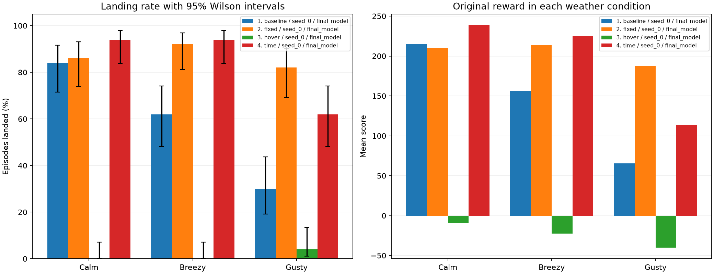

These are tests of existing policies, with their weights unchanged. All scores use the original game reward. Calm is the original task; breezy and gusty are additional stress tests. The same episode seed numbers are used across every model and condition.

| Model | Weather | Mean score | Landed | 95% interval | Timeout | Episodes |
|---|---|---|---|---|---|---|
| 1. baseline / seed_0 / final_model | Calm | 215.2 | 84% | 71%–92% | 2% | 50 |
| 1. baseline / seed_0 / final_model | Breezy | 156.5 | 62% | 48%–74% | 0% | 50 |
| 1. baseline / seed_0 / final_model | Gusty | 65.4 | 30% | 19%–44% | 0% | 50 |
| 2. fixed / seed_0 / final_model | Calm | 209.7 | 86% | 74%–93% | 10% | 50 |
| 2. fixed / seed_0 / final_model | Breezy | 213.9 | 92% | 81%–97% | 4% | 50 |
| 2. fixed / seed_0 / final_model | Gusty | 187.9 | 82% | 69%–90% | 8% | 50 |
| 3. hover / seed_0 / final_model | Calm | -9.2 | 0% | 0%–7% | 100% | 50 |
| 3. hover / seed_0 / final_model | Breezy | -22.7 | 0% | 0%–7% | 100% | 50 |
| 3. hover / seed_0 / final_model | Gusty | -40.1 | 4% | 1%–13% | 94% | 50 |
| 4. time / seed_0 / final_model | Calm | 238.7 | 94% | 84%–98% | 6% | 50 |
| 4. time / seed_0 / final_model | Breezy | 224.5 | 94% | 84%–98% | 4% | 50 |
| 4. time / seed_0 / final_model | Gusty | 113.8 | 62% | 48%–74% | 4% | 50 |
Calm: wind off. Breezy: wind power 8, turbulence 0.5. Gusty: wind power 15, turbulence 1.5. These are simulator settings, not real-world wind speeds.
The intervals describe uncertainty across episode outcomes for each fixed policy. They do not measure variation across training seeds. Small tests can have wide intervals; an apparent difference does not establish that one policy is better.
Episode seeds start at 300000. Results are saved in comparison.csv and episodes.csv.